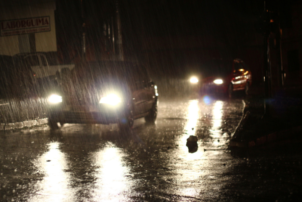

Examples
Headlights are an important part of our vehicle and safety while driving. The most obvious use of your headlights are to allow you to see the road at night. However there are a few other notable uses for your headlights. Contained in your headlights are also your blinkers, if you're the kind of driver that likes other to know that you are about to turn or change lanes than you probably use your blinkers allot. Another time your blinkers are active is when you turn your hazard lights on. These are useful when you blow a tire and need to stop on the side of the road and don't want to get hit by another vehicle.
There is one more way that we use our headlights. We use them to increase our visibility to oncoming traffic. Whether it's raining, snowing, or a clear day, when driving down the road you can see that drivers typically have their headlights on. This helps to increase their visibility on the road. If your headlights are cracked, damaged beyond repair, or completely missing, then replacement is most likely your only option.
